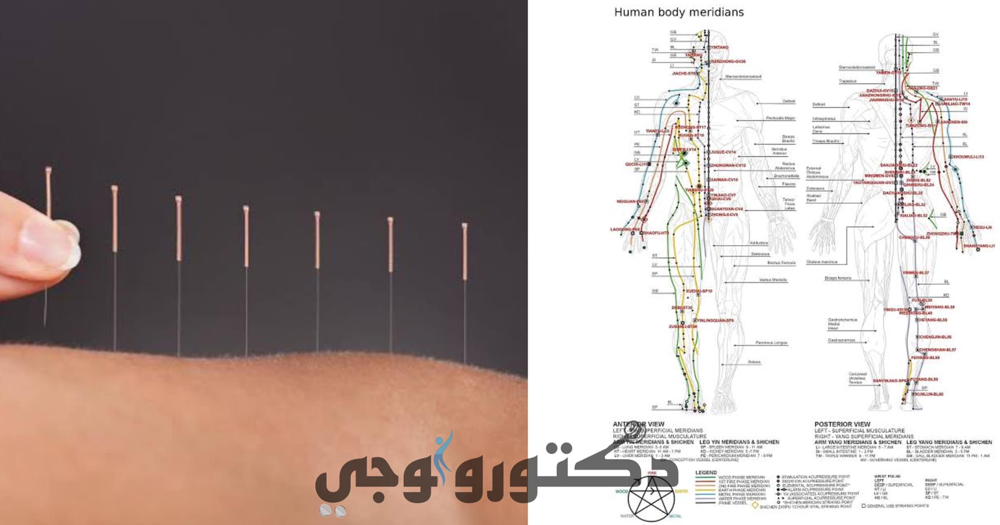

Acupuncture is a treatment method that involves inserting very thin needles into specific,
strategic points on the body to stimulate the release of certain substances to treat specific symptoms.
To understand how acupuncture works, we need to first understand the concepts of energy pathways and internal energy.
According to Chinese medicine, the body has 12 main energy pathways that carry "chi" energy throughout the body.
This chi links the mind to the body,
and these pathways facilitate a cycle between yin energy (negative) and yang energy (positive).
These are not actual electrical charges but represent opposing energies.
The body needs a certain balance of yin and yang,
and if this balance is disrupted, illness occurs.
The idea behind acupuncture is that illness is due to an excess of either yin or yang in a particular area.
For example, if a disease is caused by an excess of yin,
acupuncture needles are placed in points that increase yang energy in that area,
thereby restoring balance and alleviating the disease.
Is it real?
There's some debate between Eastern and Western doctors.
Eastern doctors claim it is effective,
while Western doctors argue that these energy pathways don't exist in human anatomy.
To settle the debate,
an experiment was conducted where radioactive substances were injected into acupuncture points and tracked with a special camera.
The substances followed the paths described by Eastern doctors,
and the areas were found to be rich in beneficial hormones and substances like amino acids,
in much higher quantities than normally present in the body.
Despite this, many Western doctors remain skeptical and do not practice acupuncture.
What are its uses?
The human body has about 500 acupuncture points, each with different benefits.
For instance, point LI 4 can reduce headaches,
point P 6 can relieve nausea or vomiting,
and point B 54 can alleviate knee and back pain, stiffness, and arthritis.
Are there any side effects?
When done professionally, acupuncture is very safe.
However, there can be some short-term side effects like pain at the needle site or minor bleeding.
That's basically everything you need to know about acupuncture in a simplified form.
If you want more details, you can look it up online.
We just wanted to give you an overview to increase your knowledge and awareness 😉
Stay safe ✨
Dr. Sherif Gamal